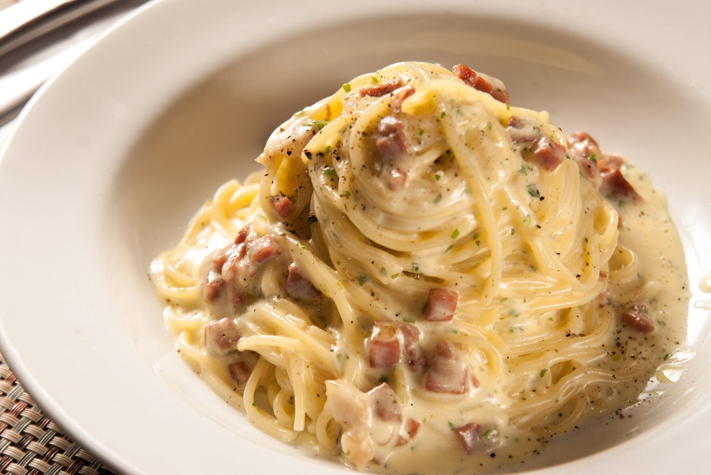
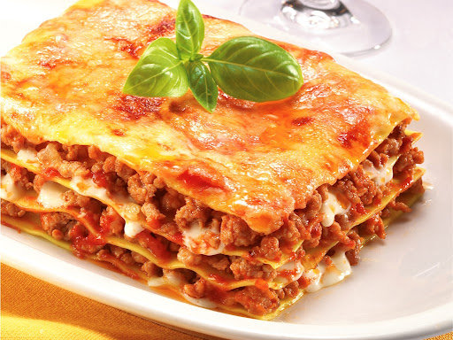
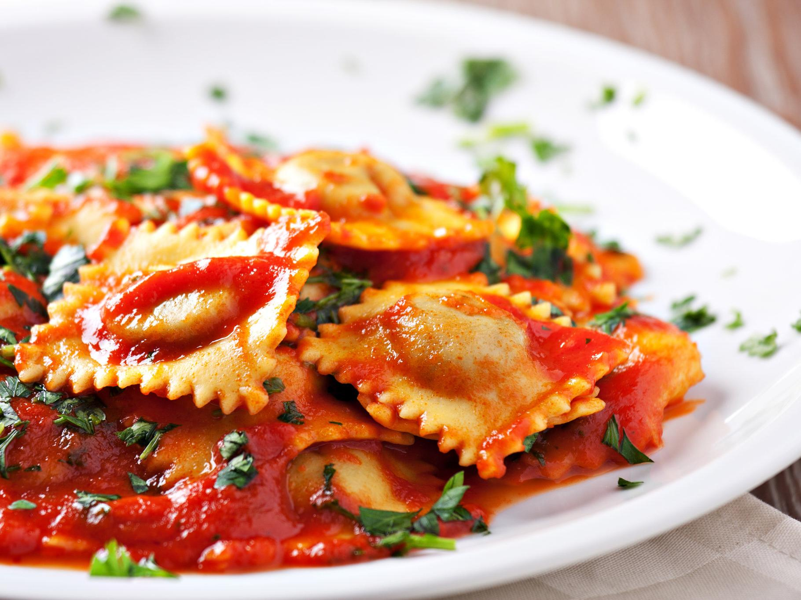

Receitas de Massas
Explore pratos clássicos como espaguete à carbonara, lasanha à bolonhesa e ravioli de ricota.
Espaguete à carbonara
Clássico absoluto, carbonara leva só bacon, ovos, queijo parmesão e a água do cozimento para acertar o ponto. Ah, um pouquinho de vinho na hora de dourar o bacon faz diferença – dá um toque de acidez que equilibra o sabor.
Lasanha à bolonhesa
Lasanha à bolonhesa é uma variação clássica e muito popular de lasanha, originária da Itália. Trata-se de um prato feito com camadas intercaladas de massa de lasanha, molho à bolonhesa, molho bechamel (ou creme branco) e queijo.
Ravioli de ricotta
Ravioli de ricotta é um tipo de massa recheada muito popular na culinária italiana. Os ravioli são pequenos "almofadinhas" de massa de trigo, que podem ter formatos variados (geralmente quadrados, redondos ou semicirculares), e o recheio de ricotta é feito com esse queijo cremoso e levemente doce.